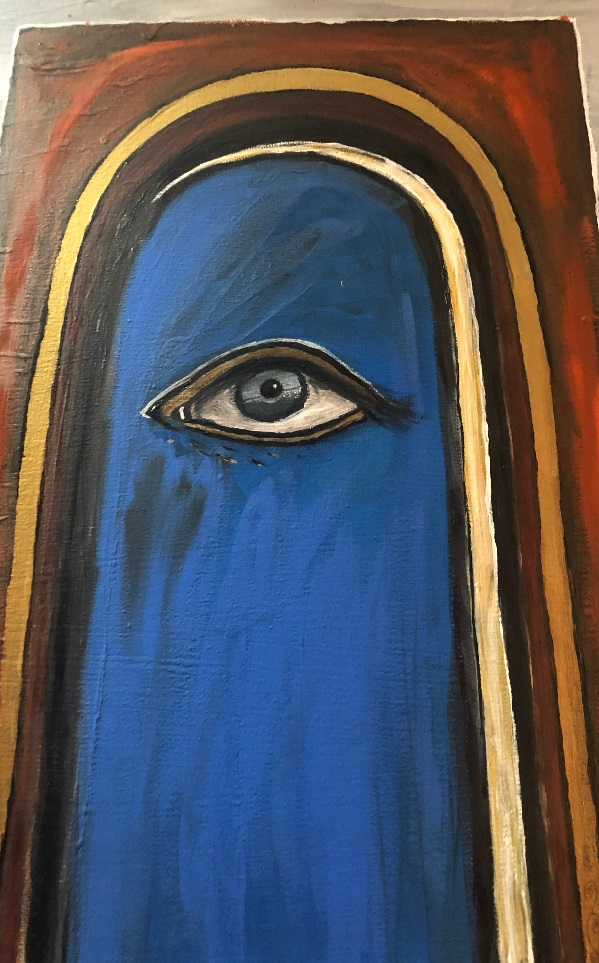
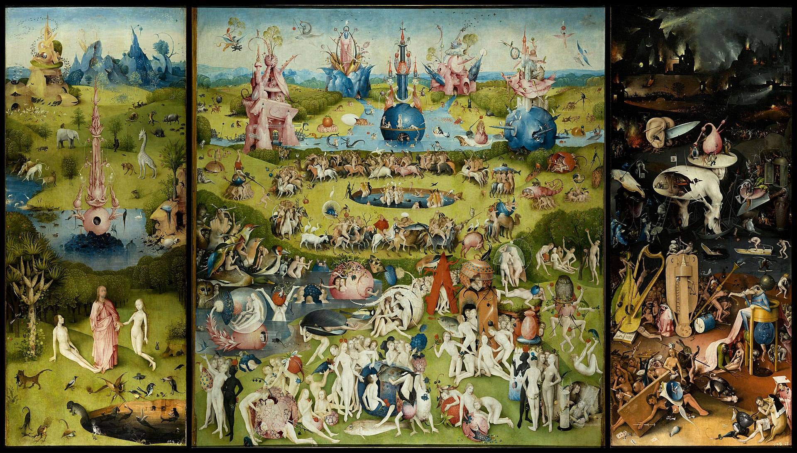
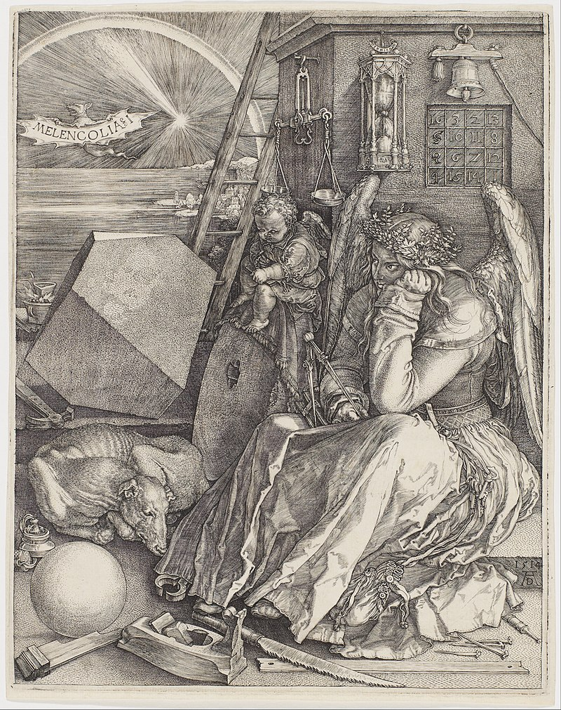
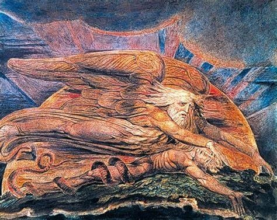
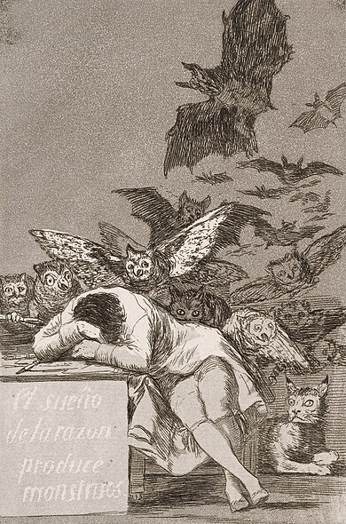

Esoteric Art
The Door

A personal creation inspired by Hermetic symbolism, this painting features a deep blue figure with a piercing eye, framed by golden arches—a nod to the pursuit of hidden wisdom. The eye, a symbol of divine perception, invites viewers to look beyond the material world.
Hieronymus Bosch’s Visions

Bosch’s *Garden of Earthly Delights* hides alchemical symbols and Hermetic wisdom in its surreal scenes. The triptych, painted in the early 1500s, explores creation, earthly chaos, and divine judgment, with hidden meanings that scholars still debate today.
Albrecht Dürer’s Melencolia I

Albrecht Dürer’s 1514 engraving *Melencolia I* is a masterpiece of esoteric art. The winged figure, surrounded by alchemical tools like a compass and a magic square, embodies the struggle for divine knowledge. The melancholic mood reflects the Hermetic tension between earthly limits and spiritual aspiration.
Fun Fact: The magic square in the artwork adds up to 34 in every direction—a nod to numerical mysticism.
William Blake’s The Ancient of Days

William Blake’s 1794 etching *The Ancient of Days* depicts a divine figure measuring the universe with a compass, symbolizing the Hermetic principle of order within chaos. Blake, a visionary poet and artist, infused his work with mystical themes, blending Christian and esoteric traditions.
Did You Know? Blake claimed to see visions throughout his life, which heavily influenced his symbolic art.
Francisco Goya’s The Sleep of Reason Produces Monsters

Francisco Goya’s 1799 etching *The Sleep of Reason Produces Monsters*, from his *Los Caprichos* series, explores the dangers of unchecked imagination. The artist sleeps as owls and bats—symbols of folly and darkness—swarm around him, reflecting esoteric themes of inner struggle and the occult.
Fun Fact: Goya’s work often critiqued societal norms, using esoteric imagery to convey deeper truths.
What Hermetic Symbol Are You?
Choose your element: